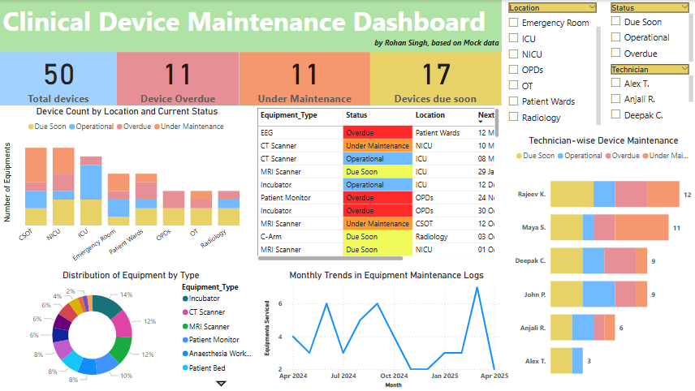

Device lifecycle and risk platform
A prototype for hospital biomedical teams. It scores risk across the device register and shows only what is overdue or due soon.
- Context
- Personal project, based on workflows seen at CMC Vellore and SCTIMST
- When
- Jan to Apr 2025
- Tools
- Power BI, Excel, Figma, PowerPoint
- Data
- Simulated device and maintenance records
- Links
- Source on GitHub
Problem
In large government hospitals, device maintenance is often tracked in manual logs. Preventive maintenance slips, and the safety and compliance gaps only show up when someone reads the whole register.
Aims
- Track the lifecycle and status of every medical device.
- Score risk automatically, following ISO 14971 logic, so preventive maintenance can be prioritised.
- Show each team only the devices that need action.
Who it is for
- Biomedical engineerCarries out and records maintenance
- Nurse supervisorReports faults from the ward
- PharmacistOwns cold-chain equipment
- Hospital administratorCompliance and purchasing decisions
What it shows
Counts of overdue, due-soon and operational devices; status by department; and each technician's workload. I wireframed the flows for all four users in Figma before building the dashboard.
